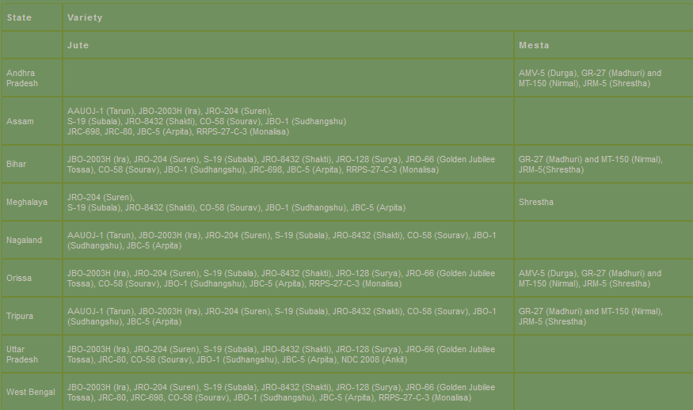
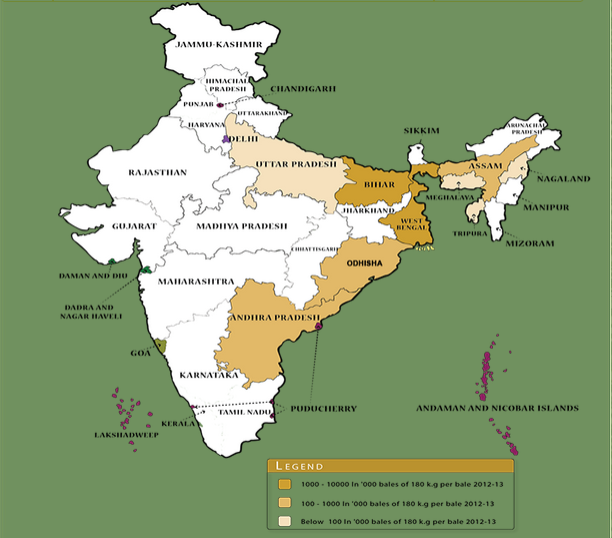

Farmr.
Jute is an important natural fibre crop in India next to cotton. In trade and industry, jute and mesta crop together known as raw jute as their uses are almost same. Raw jute plays an important role in the country’s economy. Raw jute was originally considered as a source of raw material for packaging industries only. But it has now emerged as a versatile raw material for diverse applications, such as, textile industries, paper industries, building and automotive industries, use as soil saver, use as decorative and furnishing materials, etc. Raw jute being bio-degradable and annually renewable source, it is considered as an environment-friendly crop and it helps in the maintenance of the environment and ecological balance. Further attraction of Jute lies in its easy availability, inexhaustible quantity at a comparatively cheaper rate. Moreover, it can easily be blended with other natural and manmade fibres.
Although Jute acreage has stabilized around 8 lakh hectares in the country, jute productivity has more than doubled to 22.12 q/ha in 2010-11 since partition of the country from 11 qtl per ha and the total production of raw jute in the country is about 10.58 million bales of 180 kg each. This has happened due to development of short duration high yielding varieties as well as other production technologies by ICAR including fertilizer management, weed management, farm machineries and pest management. CRIJAF (ICAR) has developed around 15 high yielding varieties of jute and allied fibres. Production and distribution of certified seed of newly released varieties are the need of the hour for further improvement in productivity. ICAR has taken the initiatives for production of quality seed of newly released varieties of jute in its farms which may increase the yield by at least 20-30%. Five most important issues namely, improvement in productivity, quality improvement, retting of jute, farm machineries and quality seed production are addressed by the ICAR through various on-going projects, which have contributed to the present level of production with adequate support from the Jute Technology Mission and Directorate of Jute Development of the Ministry of Agriculture.
With its insignificant coverage of total cultivated area, it plays a predominant role in the country’s economy by generating employment, earning foreign exchange, solving many of the socio-economic problems, etc. In earlier years, Jute was considered as a Golden Fibre but there after it had to pass through different critical situation. The main problem came in the way with the introduction of synthetic fibre by the end of sixties/early seventies. After the development of diversified product of jute fibre and due to growing concern about the environment pollution, the importance of jute has again revived.
Important regions/ zones for Jute cultivation in IndiaJute cultivation is mainly concentrated in the eastern and north eastern India while that of mesta cultivation is spread almost throughout the country. The crop can be grown in low, medium and high land situation, both moisture stress and water stagnating condition. White Jute can be grown comparatively in low land situation while that of Tossa Jute prefers medium and high land situation. Mesta is grown in almost all over the country. It being a hardy crop and can tolerate moisture stress; its cultivation is spread in different agro-climatic situations unlike jute which is concentrated only in eastern and north eastern States. In a major part of Jute area, particularly in North Bengal, Bihar and North-Eastern States, the soil is acidic in nature. However, the Jute crop is growing in these areas in existing situation adjusting the crop sequence.
 